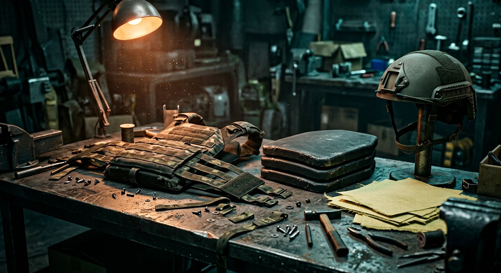
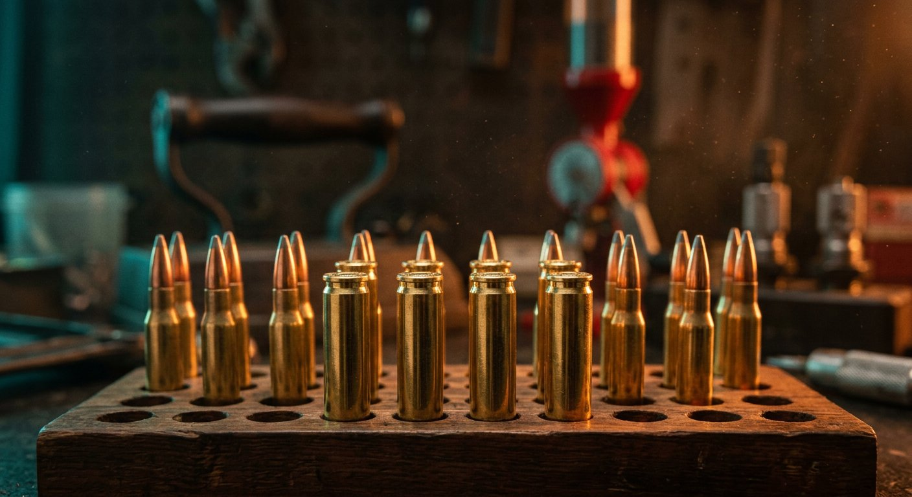
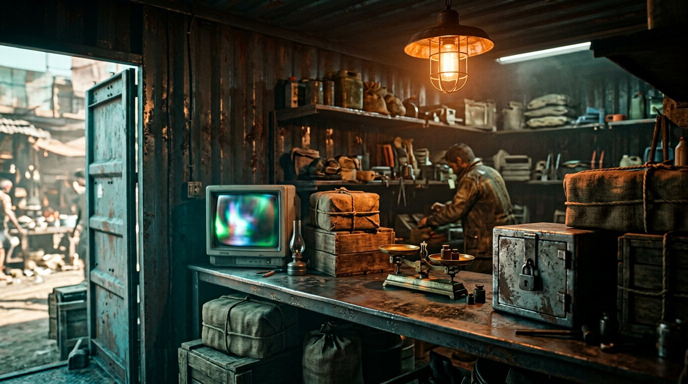

Division Cyberguerre
4 à 9 hAccessoires d'arme, optiques, puis armes complètes
Marges moyennes, cycles courts. Idéal pour les sessions de journée.
Le seul revenu du jeu qui tombe pendant que vous ne jouez pas. Deux calculateurs pour décider en dix secondes si une production vaut huit heures d'atelier.
L'hôtel des ventes prélève environ 15 % du prix de vente. Ce n'est pas un détail comptable : c'est le chiffre qui décide si un artisanat est rentable ou s'il vous fait travailler à perte. Une production affichant 20 % de marge brute n'en garde que 5 une fois la commission payée — et vous avez immobilisé un atelier pendant huit heures pour cela.
Coût des matériaux, prix de vente, durée de production. Le résultat tient compte de la commission.
La question qui décide de chaque objet de votre sac. Comparez le net réel des deux options.
Extraire reste le plus gros revenu brut du jeu. Mais l'artisanat est le seul revenu qui tombe pendant que vous ne jouez pas. Un atelier lancé avant de se déconnecter produit huit à dix-huit heures durant ; la seule compétence requise est de savoir lire une marge. Les joueurs qui franchissent les dix millions ne sont pas ceux qui tuent le plus, ce sont ceux qui n'ont jamais un atelier vide.

Accessoires d'arme, optiques, puis armes complètes
Marges moyennes, cycles courts. Idéal pour les sessions de journée.
Munitions, de rareté croissante avec le niveau de l'atelier
La meilleure production du jeu une fois au palier doré. Cycle calé sur une nuit.
Soins, stimulants, kits de réparation
Marges unitaires modestes mais parmi les meilleurs rendements horaires relevés. Cycle long.
Gilets, casques, porte-plaques, sacs à dos
Grosses marges unitaires. Les gilets d'élite restent la valeur sûre historique.
Instantanés de marché relevés entre 2025 et fin 2026. Lisez la colonne « marge » comme un ordre de grandeur, jamais comme une promesse — puis recalculez avec le calculateur ci-dessus.
| Objet | Atelier | Coût | Vente | Marge | Durée | Note |
|---|---|---|---|---|---|---|
| Munitions dorées 5,7×28 | Atelier | ≈ 163 000 | ≈ 443 000 | ≈ 280 000 net | 8 h | L'exemple chiffré le plus documenté. Un seul achat de carburant couvre souvent deux productions. |
| Munitions dorées 7,62×51 | Atelier | variable | 500 000 + | très élevée | 8 h | Régulièrement citée comme la production la plus lucrative par cycle. |
| Munitions dorées hybrides | Atelier | ≈ 650 000 – 700 000 pour 240 balles | ≈ 1 000 000 – 1 100 000 | ≈ 400 000 sur deux cycles | 2 × 8 h | Marge dépendante du prix du café, matériau volatil. |
| Gilet d'élite | Établi d'armure | ≈ 200 000 de matériaux | ≈ 300 000 pièce | ≈ 300 000 sur deux crafts | 8 h | Un achat d'acier titane fournit de quoi produire deux gilets. C'est là qu'est la marge. |
| Gilet DT-AVS | Établi d'armure | ≈ 80 000 | ≈ 140 000 | ≈ 39 000 net | — | Alternative d'entrée de gamme, accessible tôt. |
| 180 × 7,62×51 BPZ | Atelier | ≈ 40 000 | ≈ 110 000 | ≈ 53 500 net | — | Le meilleur rapport marge/prérequis pour un joueur de niveau moyen. |
| Lunette LPVO | Cyberguerre | ≈ 20 000 | ≈ 50 000 | ≈ 22 500 net | 9 h | Accessible dès le niveau 1 de l'atelier. |
| Kit de réparation de gilet de précision | Pharmacie | — | — | ≈ 38 000 | 12 h | Niveau 2 requis. Un des meilleurs rendements horaires relevés en pharmacie. |
| Caisse médicale de campagne | Pharmacie | — | — | ≈ 47 900 | 12 h | Niveau 2 requis. La meilleure marge brute de la pharmacie sur le relevé de septembre 2026. |
| Stimulant de combat OE2 | Pharmacie | — | — | ≈ 24 000 | 18 h | Niveau 1. Produisez-en en lot et vendez groupé. |
| Activateur d'endurance | Pharmacie | ≈ 10 000 | ≈ 23 000 | ≈ 9 500 net | 18 h | Petite marge, mais un prérequis minimal. |
| Point rouge OSIGHT | Cyberguerre | — | — | ≈ 9 400 | 9 h | Niveau 1. Production d'appoint quand rien d'autre n'est débloqué. |

Ouvrez l'hôtel des ventes et relevez le prix de vente réel de ce que vous comptez produire, puis le prix des matériaux. Les deux bougent indépendamment : une production rentable hier peut être à perte aujourd'hui.
Environ 25 % moins cher que les enchères sur la plupart des articles. C'est le poste d'économie le plus facile du jeu.
Multipliez le prix de vente par 0,85 AVANT de soustraire le coût des matériaux. Une marge qui ne survit pas à cette multiplication n'existe pas.
Une production à 40 000 en quatre heures bat une production à 60 000 en dix-huit heures. Le temps d'atelier est la vraie ressource rare.
Une production de huit heures lancée avant de dormir vaut mieux qu'une production de quatre heures que vous ne récolterez que douze heures plus tard. Le meilleur cycle est celui que vous récupérez à temps.
Les munitions dorées que vous fabriquez pour vendre sont aussi celles qui gagnent vos duels. Consommer sa propre production réduit le coût de vos runs sans passer par la caisse.
| Rareté | Où vendre | Pourquoi |
|---|---|---|
| Gris / vert | Marchand | La marge aux enchères ne couvre jamais la commission. |
| Bleu | Enchères | Le pilier du revenu régulier : environ 10 000 à 15 000 Alloys par case d'inventaire, assez commun pour en trouver à chaque run. |
| Violet et plus | Enchères | Marge franche, commission absorbée sans douleur. |
| Rouge / accessoires rares | Enchères | Le vrai gros revenu : parfois des centaines de milliers d'Alloys l'unité. |
